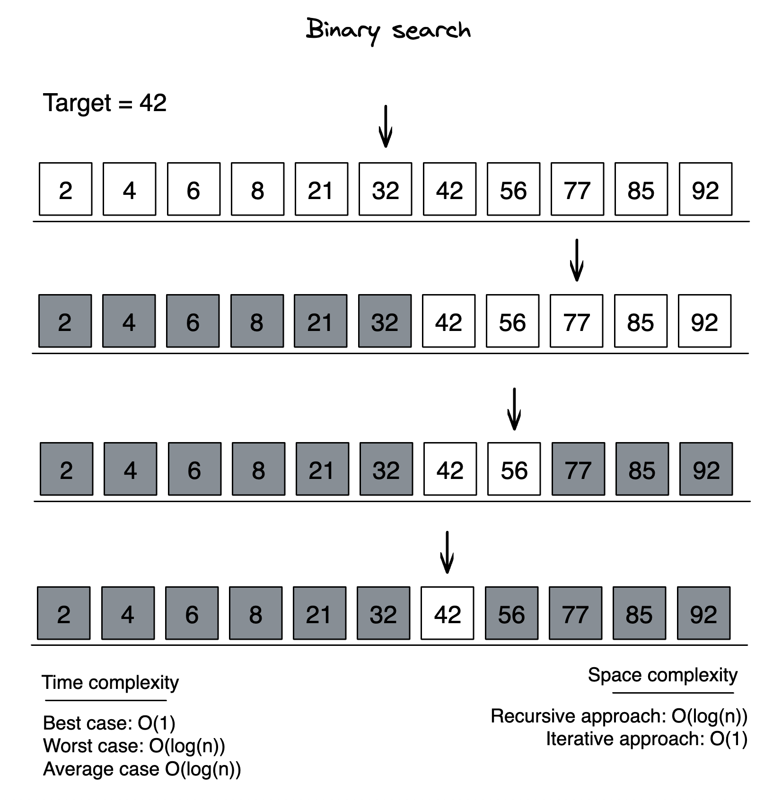
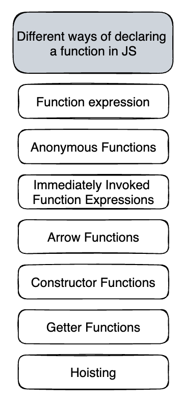
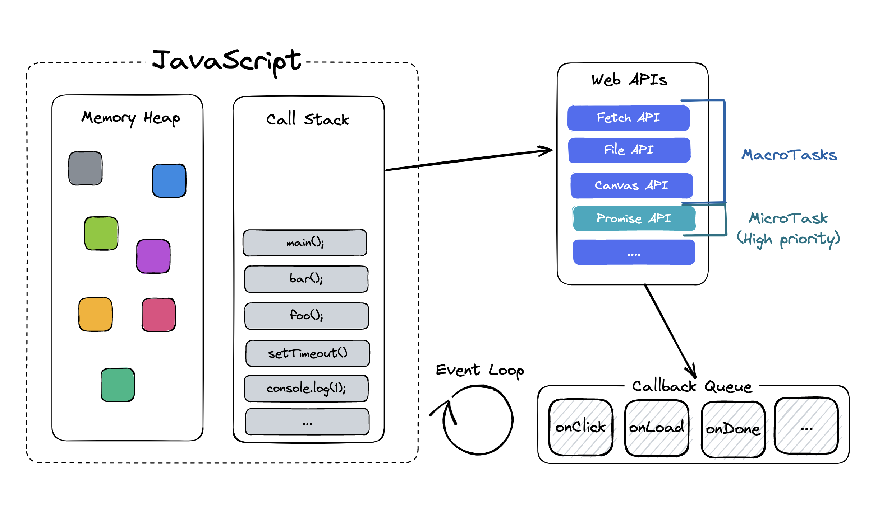
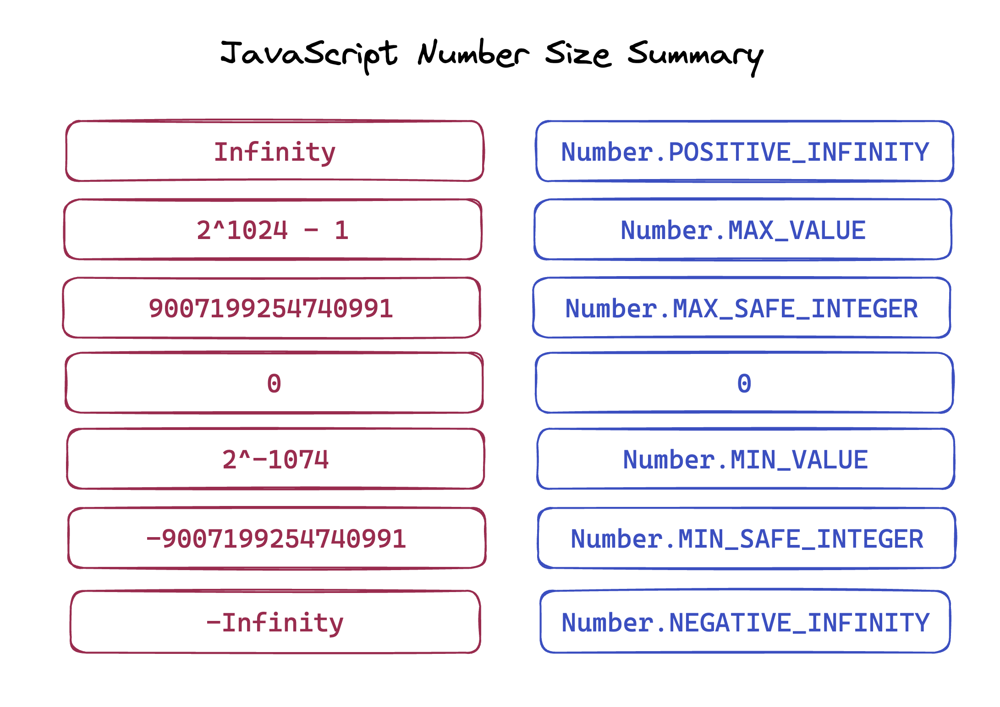
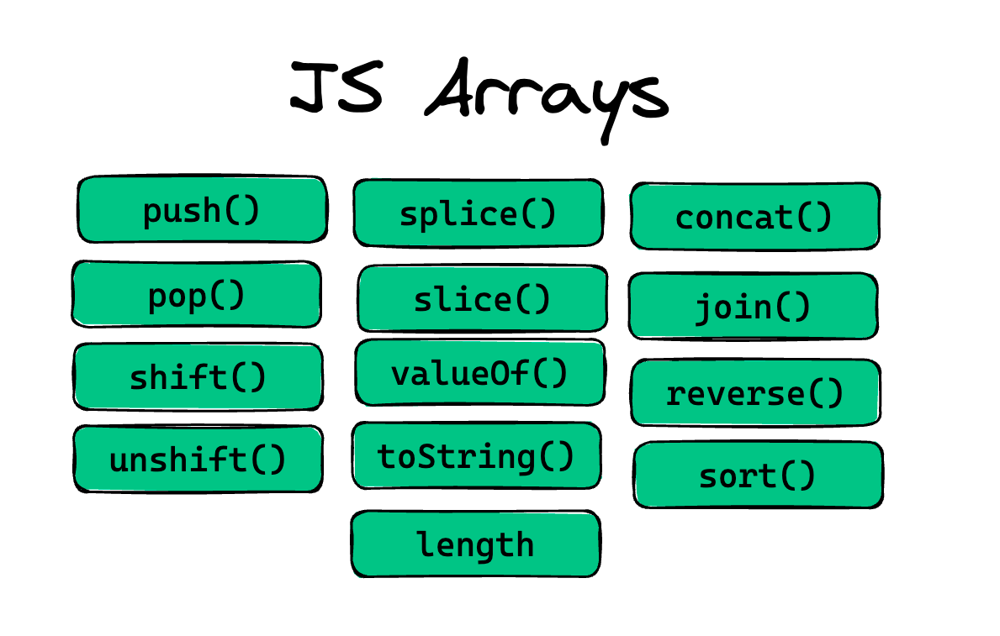
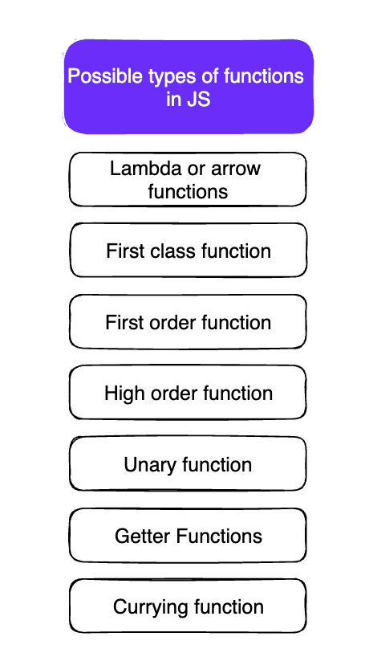

- Binary search
- Binary tree in order traversal
- Binary tree postorder traversal
- Binary tree preorder traversal
- Bubble sort
- Diffie hellman algorithm
- Graph adjacency list
- Graph adjacency matrix
- Insertion sort
- Interpolation search
- Merge sort
- Pairwise
- Quicksort
- Selection sort
- Symmetric difference
- Array length property
- Different ways of declaring functions in JS
- Event Loop
- JavaScript data types
- JavaScript number size summary
- JavaScript Arrays cheat sheet
- Possible types of function in JavaScript
- Promise action flow
Binary search

Steps:
- Step 1 - Read the search element from the user.
- Step 2 - Find the middle element in the sorted list.
- Step 3 - Compare the search element with the middle element in the sorted list.
- Step 4 - If both are matched, then display "Given element is found!!!" and terminate the function.
- Step 5 - If both are not matched, then check whether the search element is smaller or larger than the middle element.
- Step 6 - If the search element is smaller than middle element, repeat steps 2, 3, 4 and 5 for the left sublist of the middle element.
- Step 7 - If the search element is larger than middle element, repeat steps 2, 3, 4 and 5 for the right sublist of the middle element.
- Step 8 - Repeat the same process until we find the search element in the list or until sublist contains only one element.
- Step 9 - If that element also doesn't match with the search element, then returns -1;
| Time Complexity: |
|---|
| Worst case: O(log n) |
| Average case: O(log n) |
| Best case: O(1) |
function binarySearch(nums: number[], target: number): number {
let left: number = 0;
let right: number = nums.length - 1;
while (left <= right) {
const mid: number = Math.floor((left + right) / 2);
if (nums[mid] === target) return mid;
if (target < nums[mid]) right = mid - 1;
else left = mid + 1;
}
return -1;
}
class Solution {
private static int binarySearch(int[] array, int target) {
int low = 0;
int high = array.length - 1;
while(low <= high) {
int middle = low + (high - low) / 2;
int value = array[middle];
if(value < target) {
low = middle + 1;
} else if(value > target) {
high = middle - 1;
} else {
return middle;
}
}
return -1;
}
}Binary tree in order traversal
class Solution {
List<Integer> getInOrderTraversal(Node root) {
List<Integer> list = new ArrayList<Integer>();
Stack<Node> stack = new Stack<>();
Node node = root;
while(node != null || !stack.isEmpty()) {
while(node != null) {
stack.push(node);
node = node.left;
}
list.add(stack.peek().data);
node = stack.pop().right;
}
return list;
}
}Binary tree postorder traversal
class Solution {
void utility(Node root, List<Integer> traversal) {
if(root == null) {
return;
}
utility(root.left, traversal);
utility(root.right, traversal);
traversal.add(root.data);
}
List<Integer> getPostorderTraversal(Node root) {
List<Integer> traversal = new ArrayList<Integer>();
utility(root, traversal);
return traversal;
}
}
Binary tree preorder traversal
class Solution {
void utility(Node root, List<Integer> traversal) {
if(root == null) {
return;
}
traversal.add(root.data);
utility(root.left, traversal);
utility(root.right, traversal);
}
List<Integer> getPreorderTraversal(Node root) {
List<Integer> traversal = new ArrayList<Integer>();
utility(root, traversal);
return traversal;
}
}Bubble sort
function bubbleSort(array: number[] | string[]) {
for (let i = 0; i < array.length; i++) {
for (let j = 0; j < array.length - 1 - i; j++) {
if (array[j] > array[j + 1]) {
[array[j], array[j + 1]] = [array[j + 1], array[j]];
}
}
}
return array;
}
console.log(bubbleSort([2,5,2,6,7,2,22,5,7,9,0,2,3]))
public static void bubbleSort(int[] array) {
for(int i = 0; i < array.length - 1; i++) {
for(int j = 0; j < array.length - i - 1; j++) {
if(array[j] > array[j + 1]) {
int temp = array[j];
array[j] = array[j + 1];
array[j + 1] = temp;
}
}
}
}Diffie hellman algorithm
function power(a: any, b: any, p: any) {
if(b === 1) {
return 1
} else {
return Math.pow(a,b) % p
}
}
function DiffieHellman() {
let P, G, x, a, y, b, ka, kb;
P = 23
console.log("The value of P :", P);
G = 9;
console.log("The value of G :", G);
a = 4;
console.log("The private key a for Alice : ", a);
x = power(G,a,P);
b = 3;
console.log("The private key a for Bob : ", b);
y = power(G,b,P);
ka = power(y, a, P);
kb = power(x, b, P);
console.log("Secret key for the Alice is : ", ka);
console.log("Secret key for the Bob is : ", kb);
}
DiffieHellman()Graph adjacency list
public class GraphList {
ArrayList<LinkedList<Node>> alist;
GraphList() {
alist = new ArrayList<>();
}
public void addNode(Node node) {
LinkedList<Node> currentList = new LinkedList<>();
currentList.add(node);
alist.add(currentList);
}
public void addEdge(int src, int dst) {
LinkedList<Node> currentList = alist.get(src);
Node dstNode = alist.get(dst).get(0);
currentList.add(dstNode);
}
public boolean checkEdge(int src, int dst) {
LinkedList<Node> currentList = alist.get(src);
Node dstNode = alist.get(dst).get(0);
for(Node node: currentList) {
if(node == dstNode) {
return true;
}
}
return false;
}
public void print() {
for(LinkedList<Node> currentList : alist) {
for(Node node: currentList) {
System.out.print(node.data + " -> ");
}
System.out.println();
}
}
}Graph adjacency matrix
public class Graph {
ArrayList<Node> nodes;
int[][] matrix;
Graph(int size) {
nodes = new ArrayList<>();
matrix = new int[size][size];
}
public void addNode(Node node) {
nodes.add(node);
}
public void addEdge(int src, int dst) {
matrix[src][dst] = 1;
}
public boolean checkEdge(int src, int dst) {
if(matrix[src][dst] == 1) {
return true;
} else {
return false;
}
}
public void print() {
System.out.print(" ");
for(Node node : nodes) {
System.out.print(node.data + " ");
}
System.out.println();
for(int i = 0; i < matrix.length; i++) {
System.out.print(nodes.get(i).data + " ");
for(int j =0; j < matrix[i].length; j++) {
System.out.print(matrix[i][j] + " ");
}
System.out.println();
}
}
}Insertion sort
TypeScript
function insertionSort(array: number[] | string[]) {
for (let i = 1; i < array.length; i++) {
let curr = array[i];
let j = i - 1;
for (j; j >= 0 && array[j] > curr; j--) {
array[j + 1] = array[j];
}
array[j + 1] = curr;
}
return array;
}
console.log(insertionSort([1, 4, 2, 8, 345, 123, 43, 32, 5643, 63, 123, 43, 2, 55, 1, 234, 92]));Java
class Solution {
void insertionSort (int[] arr) {
int n = arr.length;
for(int i = 1; i < n; i++) {
int current = arr[i];
int position = i - 1;
while(position >= 0 && arr[position] > current) {
arr[position + 1] = arr[position];
position--;
}
arr[position + 1] = current;
}
}
}Interpolation search
class Solution {
private static int interpolationSearch(int[] array, int value) {
int low = 0;
int high = array.length - 1;
while(value >=array[low] && value <= array[high] && low <= high) {
int probe = low + (high - low) * (value - array[low]) / (array[high] - array[low]);
if(array[probe] == value) {
return probe;
} else if(array[probe] > value) {
low = probe + 1;
} else {
high = probe -1;
}
}
return -1;
}
}Merge sort
Java
class Solution {
void merge(int[] arr, int low, int mid, int high) {
int subArr1Size = mid - low + 1;
int subArr2Size = high - mid;
int [] subArr1 = new int[subArr1Size];
int [] subArr2 = new int[subArr2Size];
for (int i = 0; i < subArr1Size; i++) {
subArr1[i] = arr[low + i];
}
for (int i = 0; i < subArr2Size; i++) {
subArr2[i] = arr[mid + 1 + i];
}
int i = 0, j = 0, k = low;
while(i < subArr1Size && j < subArr2Size) {
if(subArr1[i] <= subArr2[j]) {
arr[k] = subArr1[i];
i++;
} else {
arr[k] = subArr2[j];
j++;
}
k++;
}
while(i < subArr1Size) {
arr[k++] = subArr1[i++];
}
while (j < subArr2Size) {
arr[k++] = subArr2[j++];
}
}
void mergesort(int[] arr, int low, int high){
if(high > low) {
int mid = (high + low) / 2;
mergesort(arr, low, mid);
mergesort(arr, mid + 1, high);
merge(arr, low, mid, high);
}
}
void mergeSort (int[] arr) {
int n = arr.length;
mergesort(arr, 0, n - 1);
}
}
Pairwise
export function pairwise(arr:number[], arg:number) {
const index = [];
for (let a in arr) {
let temp = arr[a];
for (let i = 1; i < arr.length; i++) {
let temp2 = arr[i];
if (temp + temp2 === arg && i > +a && index.indexOf(+a) === -1 && index.indexOf(+i) === -1) {
index.push(+a, +i);
break;
}
}
}
if (index.length >= 1) {
const addAll = (a: any, b: any) => {
return a + b;
};
return index.reduce(addAll);
} else
return 0;
}
let res = pairwise([1, 3, 2, 4], 4);
console.log(res);Quicksort
class Solution {
int makePartition(int [] arr, int low, int high) {
int pivot = arr[high];
int currentIndex = low - 1;
for(int i = low; i < high; i++) {
if(arr[i] < pivot) {
currentIndex++;
int temp = arr[i];
arr[i] = arr[currentIndex];
arr[currentIndex] = temp;
}
}
int temp = arr[high];
arr[high] = arr[currentIndex + 1];
arr[currentIndex + 1] = temp;
return currentIndex + 1;
}
void quicksort(int[] arr, int low, int high) {
if(low < high) {
int pivot = makePartition(arr, low, high);
quicksort(arr, low, pivot - 1);
quicksort(arr, pivot + 1, high);
}
}
void quickSort (int[] arr) {
int n = arr.length;
quicksort(arr, 0, n - 1);
}
}
def quicksort(arr):
if len(arr) < 2:
return arr
else:
pivot = arr[len(arr)/2]
less = [i for i in arr[1:] if i <= pivot]
greater = [i for i in arr[1:] if i > pivot]
return quicksort(less) + [pivot] + quicksort(greater)
print(quicksort([10,2,3,1,5,4]))class Solution {
static void swap(int[] array, int i, int j) {
int temp = array[i];
array[i] = array[j];
array[j] = temp;
}
private static void quickSort(int[] array, int start, int end) {
if(end <= start) return; // base case
int pivot = partition(array, start, end);
quickSort(array, start, pivot -1);
quickSort(array, pivot + 1, end);
}
private static int partition(int[] array, int start, int end) {
int pivot = array[end];
int i = start - 1;
for(int j = start; j <= end -1; j++) {
if(array[j] < pivot) {
i++;
swap(array, i, j);
}
}
i++;
swap(array, i, end);
return i;
}
}Selection sort
function selectionSort(array: any[]) {
for (let i = 0; i < array.length - 1; i++) {
let min = i;
for (let j = i + 1; j < array.length; j++) {
if (array[min] > array[j]) min = j;
}
[array[i], array[min]] =[array[min], array[i]]
}
return array;
}
console.log(selectionSort([1, 4, 2, 8, 345, 123, 43, 32, 5643, 63, 123, 43, 2, 55, 1, 234, 92])); public static void selectionSort(int[] array) {
for(int i = 0; i < array.length - 1; i++) {
int min = i;
for(int j = i + 1; j < array.length; j++) {
if(array[min] > array[j]) {
min = j;
}
}
int temp = array[i];
array[i] = array[min];
array[min] = temp;
}
}Symmetric difference
export const symmetricDifference = (...args: any) => [...new Set(args.reduce((arr1: any, arr2: any) => [
...arr1.filter((e: any) => !arr2.includes(e)),
...arr2.filter((e: any) => !arr1.includes(e))
]))];Array length property
What is the value of clothes[0]:
const clothes = ['jacket', 't-shirt'];
clothes.length = 0;
clothes[0];Reducing the value of the length property has the side-effect of deleting own array elements whose array index is between the old and new length values.
https://262.ecma-international.org/6.0/#sec-properties-of-array-instances-length
As result when JavaScript executes clothes.length = 0, all clothes items are deleted.
clothes[0] is undefined, because clothes array has been emptied.
Different ways of declaring functions in JS

Event Loop

JavaScript data types

JavaScript number size summary

JavaScript Arrays cheat sheet

Possible types of function in JavaScript

Promise action flow